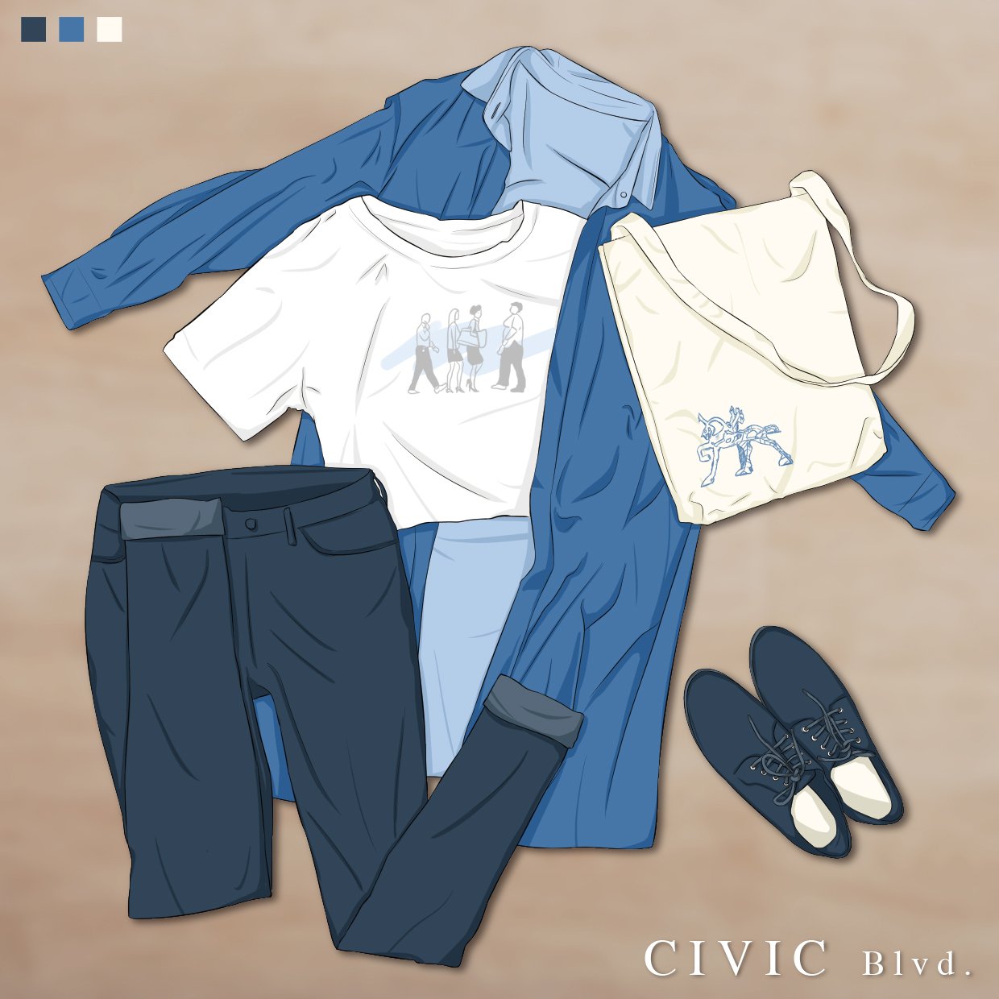

讓你心空的大帥哥是誰呢?模特兒市民哥哥本色出演【市民介紹篇】
最後一位我們的嘉賓是誰呢?他集沉穩帥氣於一身、他既知性體貼又知識淵博，根本是男朋友的最佳典範!這麼完美的人你一定不能錯過，那就是城市藝站的大帥哥市民哥哥啦~他是我們所規劃的第三條公共藝術路線---市民大道，而他也藏著許多人不知道的秘密喔!
在二、三十年前，市民大道原為台鐵軌道所經之地區，而經由鐵路地下化之後，多餘的道路路面也設置平面道路及增設高架道路，漸漸地也形成的現今車水馬龍的臺北市東西向快速道路，也就是「市民大道」。在了解過市民大道的歷史小知識後可以發現他真的是非常年輕的一條道路呢!也屬於台北市的交通要道之一，更是許多年輕人、上班族的必經之路，回家問問家裡的爸爸媽媽及兄弟姊妹，說不定很多人都會常常經過!
而近年社會的轉型，文化創意產業的興起，也為市民大道帶來不一樣的轉變，位於市民大道北側的華山公園，將自然的元素帶入了人們的生活中，並與當地的歷史做結合，提供親子一個互動場所的同時，也喚起人們對自然的重視及歷史的傳承。市民大道附近有了松菸及華山等文創園區後，建立出屬於自己的氛圍，並將創意文化與生活做連結，讓大家多了一個休閒娛樂的好去處，有機會的話也跟著你們的好友一起去看看展覽吧!
所以市民哥哥在風格上希望可以呈現出文青感及沉穩的步調，彷彿在享受、品嘗生活的每一刻，因此我們便選了與其他兩條道路不同的角色性別---男性，來做設計及展示，顏色上則是選用所有顏色中最療癒的藍色，它具有真誠性及穩定感，最能調和人們的心理感受並給予穩定的力量，最後穿搭上也採用較知性的設計，希望可以最大限度的展現出屬於市民大道的魅力。
那底下就是我們市民哥哥的小介紹，趕快記下來吧~

性別：男
身高：182cm
興趣：看展覽、學習
喜歡：文創商品、文青的東西
討厭：運動
口頭禪:「我等一下要去看展。」